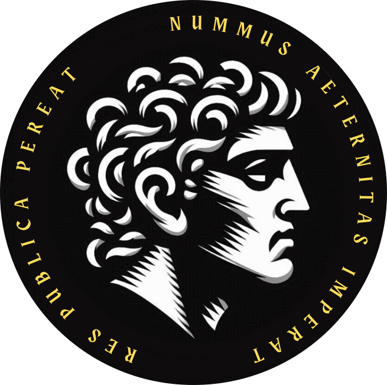
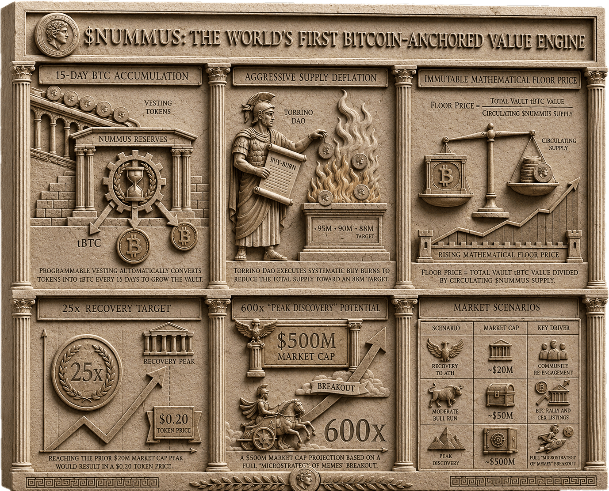

Vault Reserve
A serious, reserve-backed asset. Through swap activity Nummus accumulates tBTC into a holder-governed vault on Solana, and may hold additional assets over time.

NUMMUSAETERNITASNummus Engine
Nummus Aeternitas is a Vault Coin — a community-driven asset on Solana, anchored to a growing Bitcoin reserve and disciplined by verifiable burns. This page explains, step by step, how the machine is built and how it runs.
Vault Coin Reserve · Scarcity · Proof

The thesis
Nummus Aeternitas began as a meme coin, then evolved into something different: a reserve-oriented asset where culture, community and on-chain mechanics work together. Its fixed supply of 100 million coins is designed to keep decreasing through burns, while the model is built around transparent accumulation and reserve discipline.
A serious, reserve-backed asset. Through swap activity Nummus accumulates tBTC into a holder-governed vault on Solana, and may hold additional assets over time.
A fixed original supply of 100,000,000 NUMMUS, fully released to the market with no VC allocation — and a circulating supply that only moves in one direction: down.
Locking, DCA, buybacks and verifiable burns form the operating framework. Every figure is sourced from public on-chain records that anyone can inspect.
The engine
The mechanism reinforces supply control end to end. Value is locked, routed into a Bitcoin reserve, and reduced through burns — while everything remains public and verifiable.
Vested tokens are locked on Streamflow, preventing them from entering the market prematurely.
Strategic swap activity routes value toward tBTC, building a verifiable reserve inside the Solana ecosystem.
Buybacks and verified burns progressively reduce the circulating supply, on-chain and public.
The Nummus Aeternitas Vault holds the assets. Only Nummus holders can vote on the proposals that govern it.
The Nummus Hub is the on-chain transparency center: swap portfolio, vault, burn activity and transaction-level Solscan links.
Every metric and its full history is grouped transparently in the Institutional Metric Dashboard, designed to institutional standards with verifiable historical data.
Governance & vision
Nummus holders form the governance layer of the project: they review proposals, vote on vault decisions and help define priorities for reserve policy and public initiatives through the official Realms governance portal.
Torrino DAO is the community pushing Nummus forward — the social, cultural and operational force that coordinates attention, participation and disciplined execution around the coin.
A coin is not a short expedition, but a monument: built through narrative, tangible reserves, and community discipline.
— Torrino DAO
Access
The contract address is the primary reference for identifying the token. Use the official channels for updates, governance discussion and public visibility.
9JK2U7aEkp3tWaFNuaJowWRgNys5DVaKGxWk73VT5ray
* Access to the NUMMUS-HODLERS Discord requires holding at least 5,000 $NUMMUS in your wallet. Verification uses the Matrica wallet flow, explained in the #tutorial channel.